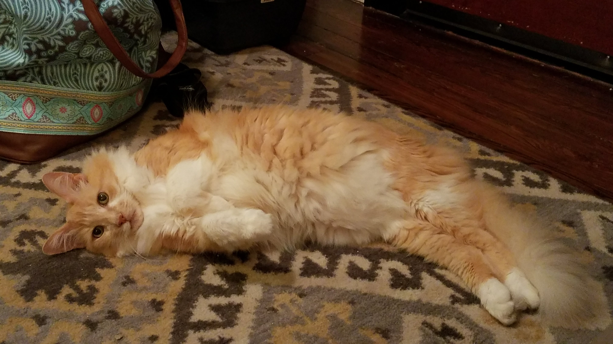
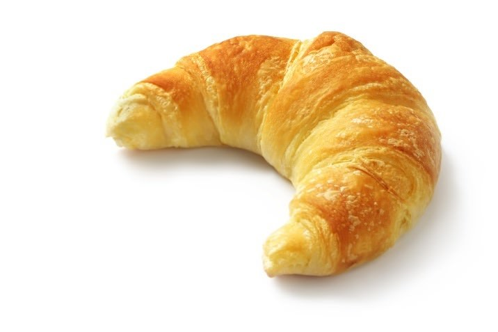

Who is Riley?
Riley has been with our family for a long time. We first got him when he was just a teeny-tiny cotton ball and, over the past 12 years, we’ve watched him mature into a loving, rambunctious, cuddly floof-ball.
Cat or Croissant?
Although no genetic testing has been carried out to date, many have speculated that Riley may be of French orgin due to the uncanny nature of his resemblance to the infamous French pastry.
 